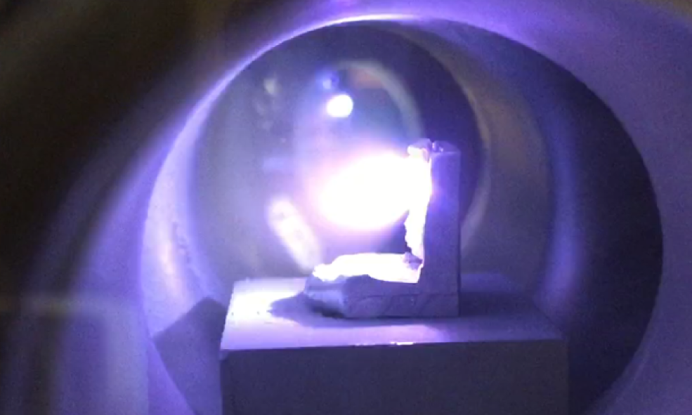
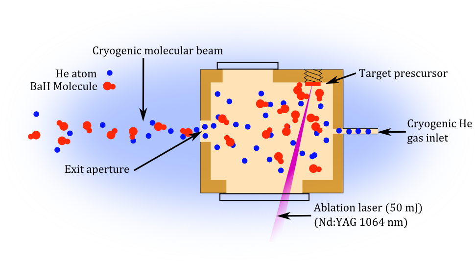
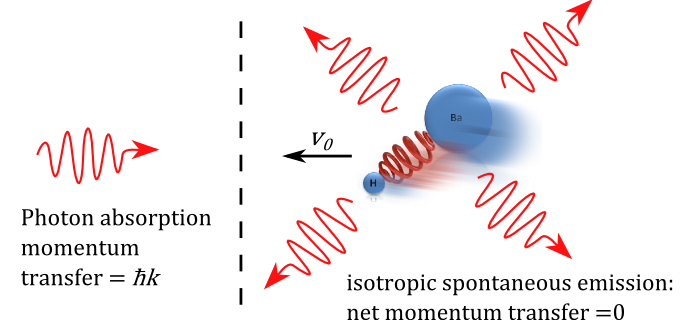
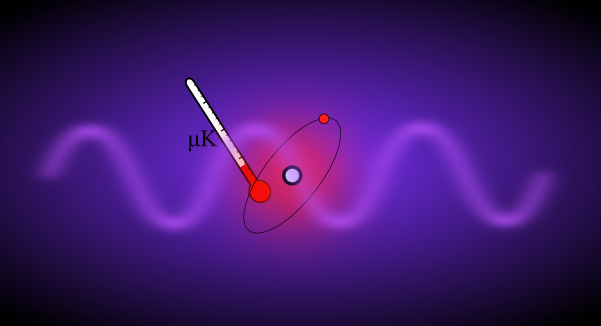

Producing New Molecular Species

The first step in molecule cooling is to obtain the molecules of interest. At ZLab, we are currently working with barium monohydride (BaH).
The alkaline-earth-metal hydrides comprise a class of diatomic molecules that should be amenable to laser cooling, as we plan to
demonstrate. BaH presents challenges such as relatively weak optical decelerations, but also benefits such as a low Doppler
cooling limit and a large mass contrast between the constituent atoms which is important for some experiments. We can create BaH
via laser ablation of a solid target, where a powerful pulsed laser creates a hot surface plasma that breaks molecular and intermolecular bonds.
This process can yield ten billion BaH molecules per pulse, and 'buffer gas cooling' reduces
their temperature to a few kelvin within several milliseconds. How to optimize the production of diatomic hydrides is still an open question.
Buffer Gas Cooling

Buffer gas cooling is a widely used technique where an inert atomic gas such as helium is brought down to cryogenic temperatures
of a few degrees kelvin, and is used as a direct coolant for molecules of interest in a cold copper cell. In this rapid process, translational
and rotational energy of the molecules is removed via many elastic collisions with the atomic gas. The resulting stream of molecules is at
a temperature of a few kelvin and moves forward at speeds below 200 m/s. Prior to trapping, the molecular beam has to be substantially slowed down,
for example, with light-induced pressure.
Laser Slowing and Cooling

Radiation pressure, or laser cooling, is a proven and effective way to slow and cool atoms that works by scattering many lower-energy photons that
propagate opposite to the atom's motion. This process removes energy and momentum, and requires a 'cycling transition'
that allows an atom which absorbs and emits a photon to return to its original state, and be addressed again by the laser. Unlike atoms,
molecules do not have cycling transitions, but some molecules possess quasi-cycling transitions which can be made to work by adding additional lasers to block
the leakage, or 'repump' the molecules back into cycling. We are investigating two prospective cooling transitions in BaH which use near-infrared photons.
Ultracold Molecule Dissociation into Exotic Atomic Gases

An exciting result from ZLab's recent studies of ultracold molecular photodissociation is
the minuscule amount of excess energy that is added to the atomic fragments when the process is carefully controlled. In the case of strontium dimers,
only 50 nK of excess energy was added to the system. If we can obtain the same nanokelvin level of heating for dissociation of BaH, then each fragment
would have a velocity very close to that of the original molecule. This shared velocity in turn leads to a significant reduction in
temperature of the lighter constituent, - in our case, atomic hydrogen. Therefore, BaH laser-cooled to sub-millikelvin temperatures could yield dilute
hydrogen samples in the few-microkelvin regime, cold enough for high-precision optical spectroscopy. Hydrogen spectroscopy is very fundamental and still
of great interest for the determination of the Rydberg constant, proton radius measurements that currently show a mysterious discrepancy, and high-precision tests
of QED. However, H spectroscopy is currently limited by motional or thermal effects. With the described techniques, H samples could be cold
enough to be optically trapped for atomic-clock-like precision and accuracy. With even lower BaH temperatures, quantum degeneracy of hydrogen could in
principle be reached.